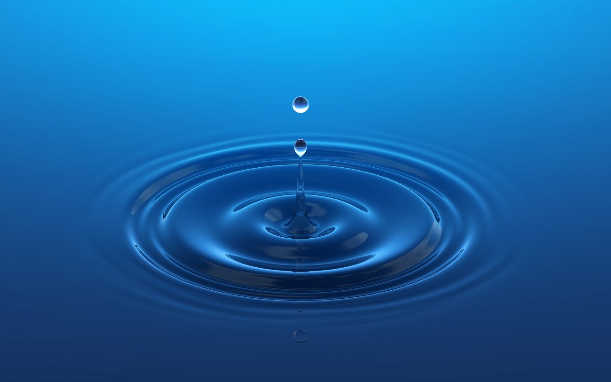

Conservación del Agua
La conservación del agua o eficiencia hídrica son términos que se refieren a la importancia de reducir el uso del agua, sobre todo procurando eliminar su mal uso.
La crisis del agua es un problema global, que nos afecta a todos y que tiene una repercusión real en todos los aspectos de nuestra vida. Sólo es cuestión de tiempo para que se desate el caos por la falta de agua o para comenzar a mejorar la crisis. Está en tus manos tomar acciones para conservar el agua.
¿Cómo puede reducirse el uso de este bien natural tan preciado?
Pues mediante la puesta en práctica de diferentes medidas y técnicas que permitan el uso de forma racional y eficiente del agua, así como la eliminación de posibles pérdidas de agua y/o derroches; e incluso la reutilización del agua siempre que sea posible.
Debido a que el agua es un recurso natural definido y cada vez más escaso, resulta de vital importancia la planificación del uso óptimo de los diferentes recursos hídricos. En esta planificación se tiene en cuenta cómo el volumen de agua disponible para su uso en embalses y presas está siempre limitado por los aportes de las precipitaciones, las cuales se ven afectadas en la actualidad por cambios bruscos de intensidad, principalmente debido al cambio climático.
También se valora la desaparición del agua que es consumida para el riego de tierras cultivables y aquella destinada al consumo humano como agua potable, así como el agua usada en las industrias y la minería.

Técnicas para su conservación
Dentro de los principales objetivos establecidos por la conservación del agua o eficiencia hídrica, destacan las medidas relacionadas con:
-
La sostenibilidad: asegurar la disponibilidad de agua para las futuras generaciones resulta de vital importancia. Para ello, deben mantenerse condiciones en las que el agua no exceda su tasa de reemplazo natural entre ecosistemas naturales y antrópicos.
-
La conservación de energía: deben tenerse en cuenta las cantidades de energía que son necesarias para las diferentes técnicas de bombeo, reparto y tratamiento del agua, intentando que dicho consumo de energía sea el más óptimo posible.
-
La conservación del hábitat: es muy importante que los seres humanos seamos conscientes de la necesidad de minimizar el uso que hacemos del agua en nuestro día a día, y que a su vez seamos capaces de priorizar estos usos para preservar aquellos hábitats que cuentan con grandes cantidades de agua, la cual es vital para la supervivencia de la vida animal y vegetal.
5 Medidas que podemos utilizar
-
1. Sé consciente. Siempre que abras un grifo o vayas a usar el agua para cualquier cosa, bañarse en una piscina, en un río o lago limpio, en el mar… trata de pensar que tú eres uno de los afortunados en el mundo que dispones de acceso al agua y que debes hacer un uso sostenible de la misma y únicamente utilizar la necesaria.
-
2. Dúchate en vez de bañarte. El baño gasta 15 veces más de agua que la ducha.
-
3. Cierra el grifo mientras… Te lavas los dientes, te afeitas o te enjabonas las manos… y si lavas los platos a mano, usa barreños y no lo hagas con el grifo abierto. Por ejemplo, si nos lavamos los dientes con el grifo abierto gastamos alrededor de 6 litros, mientras que al abrirlo solo cuando lo necesitamos gastaremos menos de medio litro.
-
4. Fugas no. Arregla las fugas de agua. Los grifos que gotean pueden llegar a gastar en un año 11.000 litros de año, fugas en la cisterna del inodoro pueden suponer más de 100 litros de agua al día.
-
5. Si tienes jardín o plantas de exterior que regar… Hazlo por la noche. Al regar durante el día puedes perder hasta el 30% por la evaporación.